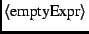

<
FuncCall ::= Primary Actuals Actuals ::= ( Expr*, )
<
The function call mechanism provides special treatment for the identifier consisting of a single period, called the current environment and pronounced dot. Dot is typically assigned a binding that contains the tools, switches, and file system required for the rest of the build. The initial environment, C-initial (see Section A.3.3 above), does not bind dot (that is, ``_defined(C-initial, ".") == false'').
When a function is called, the context in which its body executes may bind ``.'' to a value established as follows:
Thus, the binding for ``.'', if any, is passed through the dynamic call chain until it is altered either explicitly by an Assign statement (Section A.3.3.9) or implicitly by calling a function with an extra actual parameter. The pseudo-code shown in Table A.8 makes this precise. In this code, the comparison with  has not been formalized, but it should be intuitively clear.